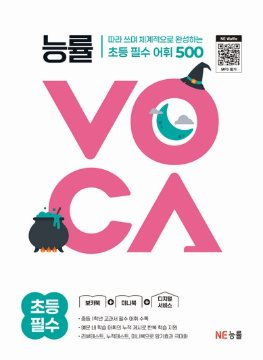
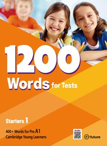
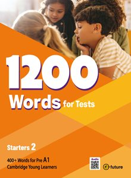
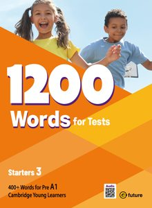
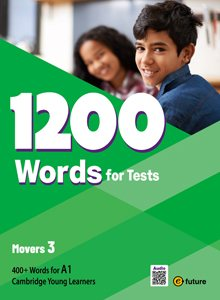
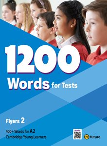
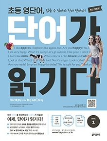
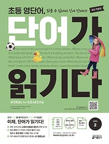
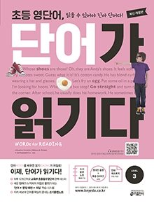
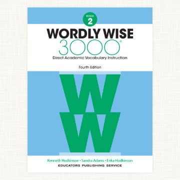

두루 읽고 공부한 뒤에
아이에게 딱 맞는 교재를 고릅니다
시중 교재와 문제집부터 섬강중, 섬강고 내신 문제 및 수능, 모의고사 5개년 기출 문제 등을 샅샅이 살피고 연구합니다.
아이에게 맞는 교재와 자료로 수업을 구성합니다.
국내외 영어 교육 자료 및 교재를
샅샅이 섭렵하고 공부합니다
시중 문제집과 교재는 물론 영어 콘텐츠, 수능, 모의고사, 학력평가, 진단평가 등
방대한 데이터를 바탕으로 자료를 분석하고, 아이에게 맞는 접근법을 찾습니다.
아이 수준에 맞춰
교재를 조합합니다
한 권의 교재로 모든 아이를 가르치지 않습니다. 레벨테스트와 상담으로 지금 수준을 확인한 뒤, 영역마다 알맞은 교재를 골라 모듈처럼 조합합니다. 내신과 수능에 필요한 문법, 구문, 어휘는 국내 교재로 단단히 다지고, 원서형 ELT 교재로 긴 글을 읽고 듣고 말하고 쓰는 힘을 함께 키웁니다.
표지를 누르면 시리즈의 모든 권과 설명이 펼쳐집니다.
국내 교재내신과 수능을 위한 초중고 교재
원서형 ELT 교재읽고 듣고 말하고 쓰는 영어
잘 맞는 아이단어를 눈으로만 보면 금방 잊는 초등 아이에게 잘 맞습니다. 따라 쓰기와 문장 쓰기가 한 권에 모두 들어 있어 혼자 하는 습관을 만들 때 수월합니다.
이렇게 활용합니다하루 분량을 정해 단어를 소리 내어 읽고 따라 쓴 뒤 QR 음원으로 한 번 더 듣습니다. 처음에는 힘들어해도 매일 같은 시간에 하며 혼자 해내는 습관을 만듭니다. 1,000개를 다 외우는 것보다 반복 횟수를 늘리는 데 중점을 둡니다.

잘 맞는 아이어휘 책을 처음 시작하는 초3~4와, 단어는 눈에 익은데 직접 쓰면 틀리는 아이에게 잘 맞습니다. 영어 책은 많이 읽었어도 한글 뜻을 정확히 모르는 고학년에게도 좋습니다.
이렇게 활용합니다하루 한 장을 풀고 워크북에 영한, 한영으로 직접 써서 오래 남게 합니다. 5일마다 나오는 누적 테스트로 복습하고, 틈틈이 미니북을 꺼내 봅니다.


잘 맞는 아이Cambridge YLE 시험을 앞두고 주제별 단어를 정리해야 하는 초등 아이에게 잘 맞습니다. 단어 뜻은 아는데 문장 속에서 쓰려면 막히는 아이에게도 좋습니다.
이렇게 활용합니다한 단원의 단어를 읽기, 듣기, 말하기, 쓰기 활동으로 돌려 보고, 다음 시간에 짧은 단어 시험으로 확인해 오래 남게 합니다. 부록 YLE Prep Test는 시험 한두 달 전에 풀어 형식에 익숙해지게 합니다.








잘 맞는 아이영어를 막 시작해서 단어는 외우는데 문장 속에서 쓰이는 모습이 낯선 초등 3~6학년에게 잘 맞습니다. 하루 10여 개씩 꾸준히 해 나가는 아이가 수월하게 따라갑니다.
이렇게 활용합니다하루 한 Day씩 단어를 익힌 뒤 바로 대표 문장을 소리 내어 읽고 직접 써서 오래 남게 합니다. 워크북 쓰기 노트와 QR 복습 퀴즈는 다음 시간 앞부분에서 짧게 확인하고, 욕심내서 진도를 당기지 않습니다.




잘 맞는 아이초등 고학년에서 중1 사이에 1000단어 수준은 마쳤고 다음 단계가 필요한 아이에게 잘 맞습니다. 주제별로 묶어서 외우면 기억이 잘 되는 아이에게 좋습니다.
이렇게 활용합니다단원 첫머리의 단어 목록에서 동의어와 반의어는 처음에는 참고로만 보고, 이야기 지문을 읽으면서 다시 만납니다. 같은 모양의 문제가 반복되므로 가끔 단어를 문장으로 말해 정말 익혔는지 확인합니다.


잘 맞는 아이파닉스를 마치고 영어책을 스스로 읽기 시작한 초등 3~6학년에게 잘 맞습니다. 한 단어가 문장마다 다르게 쓰이는 것을 익히고 싶은 아이에게 좋고, 단어장 외우기만 반복해 지루해진 아이에게도 어울립니다. K와 1권은 그림책 형태라 직접 가르쳐 주어야 해서 혼자 하는 용도로는 이릅니다.
이렇게 활용합니다한 주에 한 레슨씩, 단어를 뜻 맞추기와 문장 문제로 먼저 익힌 뒤 지문을 읽습니다. 어휘가 미국 학년 표시보다 어려운 편이라 아이 읽기 수준보다 한 단계 낮은 권에서 시작합니다. 주관식 답은 정해진 답이 없어 선생님이 직접 읽고 봐 주며, 한 권을 마치면 복습을 한 번 하고 다음 권으로 넘어가 부담을 줄입니다.





잘 맞는 아이초등 단어는 어느 정도 알고, 중학 교과서 단어를 단계별로 쌓고 싶은 아이에게 잘 맞습니다. 스타트부터 마스터까지 이어서 할 아이에게 어울립니다.
이렇게 활용합니다하루 25개 안팎을 정해 QR 음원을 듣고, 읽고, 쓰고, 시험 보는 순으로 여러 번 돌립니다. 주마다 쎄듀북에서 시험지를 뽑아 모아서 복습하고, 단계가 올라갈수록 앞 단계 단어를 다시 점검합니다.


잘 맞는 아이단어를 주제별로 묶어 외워야 오래 가는 중학생에게 잘 맞습니다. 필수 권은 중1~중2, 고난도 권은 내신 상위권이나 고등 준비를 하는 아이에게 어울립니다.
이렇게 활용합니다유닛마다 시험을 보고 틀린 단어만 암기장에 모아 반복합니다. 분량이 쌓이는 중반부에 밀리기 쉬워 하루 분량을 정해 꾸준히 이어 가고, 끝난 뒤에는 주제별로 전체를 복습합니다.
잘 맞는 아이영어 책은 많이 읽었지만 한글 뜻을 정확히 아는 단어가 부족한 예비중~중2에게 잘 맞습니다. 깜지처럼 쓰는 암기가 부담스러운 아이에게도 알맞습니다.
이렇게 활용합니다월수금처럼 요일을 정해 하루치를 풀고 채점까지 스스로 합니다. 5일마다 누적 테스트를 보고 워크북의 영한, 한영 쓰기로 복습해 오래 남게 합니다. 기본, 필수, 고난도, 숙어 순서로 올라갑니다.


잘 맞는 아이중학 교과서와 내신 단어를 처음부터 다시 정리하고 싶은 중1~2 아이에게 잘 맞습니다. 단어를 따로 외우면 금방 잊는 아이에게 좋고, 2권은 중3과 예비 고1이 고등 단어로 넘어가기 전에 쓰기 좋습니다.
이렇게 활용합니다단어를 외운 뒤 짧은 예문과 이야기 글에서 다시 만나고, 워크북으로 이튿날 복습해 효과를 높입니다. 단어 시험은 뜻만 묻지 않고 문장 안에서 빈칸으로 내어 서술형에 대비합니다.

잘 맞는 아이영어로 된 뜻풀이를 읽어도 부담이 크지 않은 중학생 이상에게 잘 맞습니다. 독해 지문 속에서 단어를 다시 만나며 오래 가져가고 싶은 아이에게 좋고, 영어 뜻풀이가 처음인 아이는 낮은 권부터 시작해야 합니다.
이렇게 활용합니다한 유닛 20개 단어를 뜻풀이와 사진으로 익히고, 문제를 풀고, 이야기 지문까지 읽어 한 번에 세 번 만납니다. 일주일에 4유닛 안팎으로 꾸준히 이어 가고, QR 음원으로 따라 읽습니다. 이야기 뒤 서술형 문제는 영작이 어려우면 말로 먼저 답합니다.


잘 맞는 아이중학생부터 고등학생까지 사설과 설명문 같은 글에서 학술 어휘를 넓히고 싶은 아이에게 잘 맞습니다. 단원마다 같은 방식으로 꾸준히 풀며 단어를 쌓는 성향의 아이에게 좋고, 수능이나 SAT 준비로 이어 갈 계획이 있는 경우에도 어울립니다. 영어 문장을 거의 읽지 못하는 아이에게는 이릅니다.
이렇게 활용합니다한 단원의 단어를 두 번에 나누어 익히고, 셋째 단원마다 나오는 복습을 빠뜨리지 않고 풀어 오래 남게 합니다. 접두사와 접미사를 다루는 Word Study 부분을 함께 보며 모르는 단어의 뜻을 추측하는 힘을 기릅니다. 단원이 끝나면 배운 단어로 짧은 글을 직접 씁니다.


잘 맞는 아이중학 어휘는 외웠는데 아는 단어가 문장에서 다른 뜻으로 나와 틀리는 아이에게 잘 맞습니다. 고교기본은 중3~고1이, 수능은 모의고사 어휘를 넓히려는 고2~3이 맡으면 수월합니다.
이렇게 활용합니다과제는 단어 개수가 아니라 유닛 수로 정해 꾸준히 이어 갑니다. 익숙한 단어의 숨은 뜻과 비슷해서 헷갈리는 단어를 먼저 확인한 뒤 외워 오래 남게 합니다. 같은 책을 반복하지 않고 난이도가 비슷한 다른 어휘책으로 돌려 가며 긴장감을 유지합니다.

잘 맞는 아이단어 뜻은 외우는데 선택지가 비슷한 말로 바뀌어 나오면 헷갈리는 아이에게 잘 맞습니다. Core는 고1 내신과 모의고사를, Pro는 1등급을 노리는 아이가 쓰면 좋습니다.
이렇게 활용합니다표제어를 외운 뒤 유의어와 반의어 확인 퀴즈를 바로 풀어 단어끼리 이어서 기억합니다. 별도 판매하는 실전문제집으로 다의어 뜻 구별과 영영 풀이까지 풀어 시험 형태에 익숙해집니다. 교재 QR로 앱 복습을 함께 하며 반복합니다.

잘 맞는 아이예비고~고1이 내신과 수능 어휘를 한꺼번에 준비하기에 좋습니다. 문제를 풀며 외우는 쪽이 잘 맞는 아이에게 알맞습니다.
이렇게 활용합니다보카북으로 외우고 워크북으로 테스트한 뒤, 틀린 단어는 미니북이나 앱으로 다시 봅니다. 일주일 단위로 누적 복습을 넣어 오래 남게 합니다. 기본부터 시작해 수능 필수로 올라갑니다.


잘 맞는 아이특목고, 국제학교, 수능 고난도 지문을 준비하며 학술 어휘를 넓혀야 하는 중고등 학생에게 잘 맞습니다. 단어 암기를 꾸준히 할 수 있는 고등 수준의 아이에게 어울리고, 기본 어휘가 아직 부족한 중학생에게는 이릅니다.
이렇게 활용합니다하루 분량을 정해 유의어와 영영풀이까지 같이 보고, 며칠마다 모아서 시험을 봐 오래 남게 합니다. 토플 단어와 수능 단어는 서로 다른 것이 많아 먼저 수능 단어를 굳힌 뒤 학술 어휘로 넓혀 부담을 줄입니다. 독해 지문을 읽다 만난 표제어에는 표시해 두고 문맥 속에서 다시 확인합니다.

잘 맞는 아이문법 용어는 들어 봤지만 규칙을 스스로 설명하기는 어려운 초등 고학년에게 잘 맞습니다. 문법 용어가 아주 낯선 저학년에게는 이릅니다.
이렇게 활용합니다예문을 먼저 읽고 규칙을 스스로 찾게 한 뒤 문제를 풉니다. 틀린 문제는 그날 워크북에서 바로 다시 풀어 실수를 줄입니다. 인칭대명사처럼 헷갈리는 단원은 시간을 더 두고 반복합니다.

잘 맞는 아이단어는 아는데 문장으로 말하고 쓰려면 막히는 초등 아이에게 잘 맞습니다. 문법 설명을 길게 듣는 것보다 문장을 읽고 따라 쓰는 쪽이 편한 아이에게 어울립니다.
이렇게 활용합니다한 단원의 문장을 소리 내어 읽고, 읽은 문장을 공책에 쓰는 순서로 진행합니다. 음원을 듣고 따라 읽는 시간을 짧게 매일 두어 부담을 줄입니다.


잘 맞는 아이기초 문법책을 한 번 끝냈는데 서술형이나 영작에서 아직 구멍이 보이는 초등 고학년에게 잘 맞습니다. 문법을 처음 접하는 아이에게는 앞 단계인 What's Grammar Start부터 시작하는 편이 수월합니다.
이렇게 활용합니다개념을 읽고 문제를 풀고 문장을 만든 뒤, 마지막에 워크북과 단어 쓰기까지 하루에 끝내 오래 남게 합니다. 앞 권 내용이 뒤 권에 다시 나오므로 틀린 부분은 넘기지 않고 그 자리에서 고칩니다.

잘 맞는 아이문법 용어가 처음이지만 문제를 많이 풀며 익히는 초등 고학년에게 잘 맞습니다. 중학 문법을 앞두고 예습할 아이에게도 알맞습니다.
이렇게 활용합니다본책 한 단원을 풀고 같은 구성의 워크북으로 한 번 더 반복합니다. 다음 단계로 나가기 전에 미리 풀어 보는 예습용으로도 씁니다.


잘 맞는 아이영어 문장은 어느 정도 읽는데 문법은 이제 처음 시작하는 초등 아이에게 잘 맞습니다. 한꺼번에 많이 하면 부담스러워하는 아이도 하루 한 단원 분량이라 따라가기 쉽습니다. 알파벳과 파닉스가 아직 불안한 아이에게는 이릅니다.
이렇게 활용합니다Student Book에서 개념을 배운 날 바로 Action Book의 문제를 풀어 흐름을 이어 갑니다. 첫 장의 30 Day Study Planner에는 아이가 직접 날짜를 적어 꾸준히 하게 합니다. 틀린 문장은 다음 시간에 다시 씁니다.
잘 맞는 아이문법 용어는 들어 봤지만 문장을 직접 만들어 보면 막히는 초등 고학년에게 잘 맞습니다. 읽고 풀기보다 손으로 써 봐야 익는 아이에게 좋습니다.
이렇게 활용합니다한 단원을 배우면 바로 빈 종이에 예문을 쓰고, 틀린 문장은 다음 시간에 다시 써서 오래 남게 합니다. 파트가 끝날 때마다 QR 퀴즈로 복습하고, 3권의 요점 정리표는 중학 진학 전에 한 번 더 훑어 둡니다.


잘 맞는 아이파닉스를 마치고 문장을 읽기 시작한 초등 저중학년에게 잘 맞습니다. 규칙 설명보다 문장을 입으로 반복하며 익히는 아이에게 좋습니다.
이렇게 활용합니다단원마다 이해 확인, 문제 풀이, 문장 만들기 순서를 지키고 마지막 문장 만들기에서 소리 내어 말합니다. 단원 끝 문법 노트는 직접 채웁니다. 앞에서 배운 문법이 뒤 단원에 다시 나오므로 중간에 건너뛰지 않습니다.


잘 맞는 아이기초 문법책을 한 번 끝내고 다음 단계로 넘어가는 초등 고학년에게 잘 맞습니다. 설명이 쉽고 문제 부담이 크지 않아 문법이 처음 어려워지기 시작한 아이에게도 무리가 없습니다.
이렇게 활용합니다무난하게 진도를 나가는 책입니다. 복습 문제가 적은 편이라 단원이 끝날 때마다 문법 차트를 보며 직접 문장을 쓰고, 중간·기말 테스트로 한 번 더 점검합니다.

잘 맞는 아이문법 규칙을 외우기보다 예문으로 익히는 편이 맞는 중학생에게 잘 맞습니다. 문법이 여러 번 어려웠던 아이가 기본부터 다시 쌓을 때도 어울립니다.
이렇게 활용합니다예문을 읽고 POINT 요약으로 정리한 뒤 문제와 워크북을 풉니다. 중2 과정은 분량이 많아 이 시기에 빠짐없이 다집니다. 같은 레벨의 천일문 WRITING을 병행해 용어를 이어 갑니다.

잘 맞는 아이학교 교과서 진도에 맞춰 내신 문법을 차근차근 준비하는 중학생에게 잘 맞습니다. 혼자 풀이를 읽고 따라갈 수 있는 아이에게 어울립니다.
이렇게 활용합니다한 권을 한 학기에 마친다는 속도로 잡습니다. 빈칸 활동으로 개념을 확인한 뒤 서술형 문제까지 풀고, 시험 전에는 워크북과 개념노트로 정리합니다. 문제 수가 더 필요하면 N제나 잘풀영을 더합니다.


잘 맞는 아이개념은 들었는데 문제만 나오면 헷갈리는 중학생에게 잘 맞습니다. 문제를 충분히 풀어야 손에 익는 아이에게 어울립니다.
이렇게 활용합니다개념 하나를 배우고 바로 그 자리에서 문제를 풉니다. 챕터가 끝나면 통합 문제와 서술형을 풀고, 틀린 문제는 워크북으로 한 번 더 풉니다.


잘 맞는 아이중학 문법은 한 번 배웠는데 시간이 지나면 잊는 아이에게 잘 맞습니다. 내신 대비로 문제를 많이 풀며 누적 복습을 하려는 중학생에게 어울립니다.
이렇게 활용합니다세 챕터를 마칠 때마다 누적 테스트를 풀어 앞 내용을 다시 확인합니다. 문제 양이 많아 하루 분량을 정해 두고, 빈칸 개념 노트는 시험 전에 다시 채웁니다.


잘 맞는 아이구문 공부가 처음이거나 문장이 길어지면 끊어 읽기가 어려운 중학생에게 잘 맞습니다. 문법 기초가 아주 약한 아이도 시작할 수 있습니다.
이렇게 활용합니다문장 구조 그림을 보며 끊어 읽고, 해석하고, 영작까지 이어서 합니다. 수업에서 반복 확인 학습을 하고, 해설을 읽은 뒤 직접 문장을 씁니다. 1권이 끝나면 방학에 2권으로 바로 이어 갑니다.


잘 맞는 아이초등 문법을 한 번 지나왔고 중학 내신 서술형을 준비하는 아이에게 잘 맞습니다. 쓰기 문제를 충분히 풀며 익히고 싶은 아이에게 알맞습니다.
이렇게 활용합니다본책을 순서대로 풀고 같은 구성의 워크북으로 반복합니다. 시험이 급할 때는 헷갈리는 단원만 먼저 골라 공부합니다. 쓰기 문제는 틀린 문장을 다시 써서 서술형에 대비합니다.


잘 맞는 아이문법을 처음 배우는 예비중부터 고등 문법까지 이어서 가려는 아이에게 잘 맞습니다. 쓰기 연습과 누적 테스트로 내신 서술형을 꾸준히 준비하는 아이에게 알맞습니다.
이렇게 활용합니다개념을 배우면 바로 문장으로 씁니다. 챕터마다 있는 누적 테스트로 앞 단원을 복습하고 워크북으로 반복합니다.

잘 맞는 아이문법 설명은 짧게 듣고 문제를 풀며 익히는 아이에게 잘 맞습니다. 중1 문법을 한 권으로 정리하고 싶은 아이에게 알맞습니다. 문제 양이 많은 책을 찾는다면 부족할 수 있습니다.
이렇게 활용합니다1권부터 시작합니다. 문제를 푼 뒤에는 왜 그 답인지 말로 설명해 오래 남게 합니다. 챕터가 끝나면 내신 대비 테스트와 서술형을 풀고 총괄평가로 마무리합니다.


잘 맞는 아이문법은 배웠는데 긴 문장에서 주어와 동사를 잡지 못하는 아이에게 잘 맞습니다. 구문을 독해로 이어 가고 싶은 중학생에게 알맞습니다. 상위권에게는 3권이 쉽게 느껴질 수 있습니다.
이렇게 활용합니다대표 문장을 도식으로 나누어 보고 해석 연습으로 넘어가는 순서를 지킵니다. 단원이 끝나면 워크북으로 단어와 구문을 한 번 더 테스트해 오래 남게 합니다.


잘 맞는 아이중학 문법을 처음 접하는 아이에게 잘 맞습니다. 문제가 비교적 쉬워서 부담 없이 시작할 수 있습니다. 교사용 자료가 따로 없는 점은 알아 두면 좋습니다.
이렇게 활용합니다개념을 정리한 뒤 서술형 워크북으로 쓰기 숙제를 냅니다. 단원마다 리뷰 테스트를 풀고 헷갈린 부분에 표시한 뒤 다시 확인해 오래 남게 합니다. 불규칙동사표도 함께 외웁니다.
잘 맞는 아이중학 내신 문법을 처음부터 차근차근 잡고 싶은 아이에게 잘 맞습니다. 설명이 짧고 간단해서 문법 책을 두껍게 느끼는 아이도 부담이 적습니다. 영어 문장 읽기가 아직 많이 서툰 아이에게는 이릅니다.
이렇게 활용합니다하루에 한 강씩 개념과 확인 문제를 풀고, 같은 날 영작 연습까지 끝내 서술형에 대비합니다. 한 권을 끝낸 뒤에는 Workbook과 내신 실전평가로 한 번 더 점검합니다. 틀린 문제는 오답노트에 정리해 다시 풉니다.


잘 맞는 아이개념은 이해하는데 서술형에서 문장을 직접 쓰면 점수를 잃는 중학생에게 잘 맞습니다. 문법 용어가 처음인 아이에게는 조금 이르니 초등 문법을 먼저 마치면 수월합니다.
이렇게 활용합니다평소에는 이 책으로 개념을 잡고, 시험 전에는 내신 범위 단원만 골라 풉니다. 서술형 보충이 더 필요하면 서술형 집중훈련 교재를 이어 쓰고, 틀린 문장은 노트에 다시 씁니다.
잘 맞는 아이중학교 문법을 처음부터 순서대로 정리하고 싶은 아이에게 잘 맞습니다. 영어 지문 속에서 문법을 만나는 방식이라 영어 읽기에 부담이 적은 아이에게 좋습니다.
이렇게 활용합니다문법 포인트를 읽고 연습문제를 푼 뒤 자주 틀리는 부분 코너를 따로 모아 오답 노트로 씁니다. 1권부터 6권까지 단계가 길어 수준에 맞는 권에서 시작하고, 한 단원이 끝나면 예문을 직접 씁니다.


잘 맞는 아이문장은 읽는데 길어지거나 구조가 복잡해지면 해석이 흔들리는 아이에게 잘 맞습니다. 예비고1은 입문, 문법 개념이 잡힌 고1~2는 기본, 실전 속도를 올리려는 고2~3은 핵심과 완성부터 시작하면 수월합니다.
이렇게 활용합니다문장을 의미 단위로 끊어 읽고 직접 손으로 씁니다. 별책 천일비급과 부가 어휘 테스트, 복습 자료까지 이어서 써 복습을 쉽게 합니다. 완성은 하루 분량이 많아 나누어 진행하고, 핵심을 건너뛰지 않고 단계를 차례로 밟아 난이도 차이를 줄입니다.


잘 맞는 아이구문 공부는 했는데 긴 문장에서 중심 내용을 못 찾거나, 모양이 비슷한 구문을 자꾸 헷갈리는 아이에게 잘 맞습니다. 구문 기초가 처음인 아이에게는 이릅니다.
이렇게 활용합니다문장 줄이기에서 문장의 중심 내용을 먼저 잡고 수식어구를 걸러 읽는 연습을 한 뒤, 함정 피하기로 헷갈리는 구문을 구별합니다. 12챕터라 방학 단기 특강처럼 짧게 돌립니다. 부가 MP3와 해석 연습지로 복습합니다.

잘 맞는 아이고등 문법을 개념 설명보다 예문으로 익히는 편이 맞는 아이에게 잘 맞습니다. 중학 문법을 한 번 훑은 중3~고1이 내신과 모의고사 어법을 함께 준비할 때 쓰기 좋습니다.
이렇게 활용합니다유닛마다 표시된 출제 빈도를 보고 중요한 것부터 먼저 돌려 시간을 아낍니다. 대표 예문을 먼저 소리 내 읽고 내신 유형 문제를 풀어 예문이 시험 문제로 이어지게 합니다. 어법 POINT BOOK은 시험 직전 정리용으로 씁니다.

잘 맞는 아이독해는 대충 감으로 하고 어법 문제에서 자꾸 점수를 잃는 아이에게 잘 맞습니다. 고등 어법이 처음이면 START, 어법 기본이 있고 점수를 올리려면 ESSENTIAL부터 시작하면 수월합니다.
이렇게 활용합니다단원을 배운 뒤 모의고사 응용 문제로 바로 확인하고, 틀린 문제는 왜 그 선택지가 틀렸는지 문장 구조로 설명합니다. 휴대용 개념 암기북은 이동 시간에 반복합니다. 실전 모의고사는 문제만 푸는 단계라 진도를 다 나간 뒤에 씁니다.


잘 맞는 아이중학 문법을 정리하고 고등 어법 문제에 처음 들어가는 예비고1~고1에게 잘 맞습니다. 서술형 훈련과 미니 모의고사가 함께 있어 내신과 수능을 같이 시작하려는 아이에게 좋습니다.
이렇게 활용합니다개념 학습, 적용 훈련 순서대로 한 단계씩 끝내고 서술형 문제를 직접 써서 개념을 정리합니다. 미니 모의고사는 진도 중간중간 풀어 실력을 확인하는 용도로 씁니다. 어법 포인트가 더 필요하면 어법끝 START로 이어 갑니다.

잘 맞는 아이고등 문법을 처음 정리하는 예비고~고1에게 잘 맞습니다. 문법이 담긴 지문으로 독해와 이어 공부하고 싶은 아이에게 알맞습니다.
이렇게 활용합니다단원마다 연습 문제를 풀고 지문에서 한 번 더 확인합니다. 챕터 끝의 누적 테스트와 워크북으로 반복하고, 쓰기 문제는 직접 문장을 써서 서술형에 대비합니다.

잘 맞는 아이고등 문법을 한 권으로 빠르게 정리하려는 예비고~고1에게 잘 맞습니다. 설명을 길게 듣기보다 문제를 직접 풀며 익히는 아이에게 알맞습니다.
이렇게 활용합니다주관식 문제로 각 포인트를 풀며 문장을 직접 씁니다. 챕터마다 Review Test로 묶어 복습하고, 내신 고난도와 서술형 유형은 틀린 문장을 다시 써서 오래 남게 합니다.
잘 맞는 아이단어와 문법은 아는데 3~4줄 되는 긴 문장에서 구조가 안 보이는 고1~고2에게 잘 맞습니다. 손으로 표시하며 읽는 연습이 필요한 아이에게 좋습니다.
이렇게 활용합니다매일 핵심 문장을 나누어 끊어 읽기와 구조 표시를 직접 합니다. 문장 성분 단위로 끊는 연습이 중요해서 해석만 보고 넘어가지 않고, 끝낸 뒤에는 독해 기출로 이어 갑니다.
잘 맞는 아이수능 어법과 어휘 문제에서 감으로 고르다 틀리는 고1~고3에게 맞아 보입니다. 문법 기본서를 한 번 본 뒤 기출로 훈련하려는 아이에게 좋습니다.
이렇게 활용합니다하루 분량을 풀고 채점표에 틀린 유형을 표시해 약한 부분을 확인합니다. 문장을 끊어 읽으며 근거를 찾고, 기출 단어 리스트는 따로 시험을 봐서 챙깁니다.
잘 맞는 아이짧은 글은 읽는데 지문이 길어지면 의미를 놓치는 초등 아이에게 잘 맞습니다. 단계가 잘게 나뉘어 있어서 아이 수준에 맞는 권부터 시작하기 좋습니다.
이렇게 활용합니다하루 한 지문씩 읽고 단어 쓰기 노트로 정리합니다. 문장 구조를 분석하는 단계는 어려워하므로 선생님과 함께 천천히 읽습니다. 방학에는 진도를 조금 올립니다.


잘 맞는 아이영어 문장은 읽을 수 있는데 여러 문장이 이어진 글에서 길을 잃는 초등 고학년에게 잘 맞습니다. 파닉스와 기초 단어를 막 끝낸 아이에게는 처음에 오답이 많을 수 있습니다.
이렇게 활용합니다한 번에 한두 지문만 풀 정도로 분량을 작게 잡고 매일 이어 갑니다. 틀린 문제는 단어 모음을 보며 다시 풀고, 직독직해 워크시트로 끊어 읽기를 연습합니다.
잘 맞는 아이기초 단어를 알고 파닉스를 끝낸 초등 아이가 영어 글을 정확히 읽는 연습을 하기에 좋습니다. 글 읽기를 이제 막 배우는 아이에게는 1권도 어려울 수 있습니다.
이렇게 활용합니다한 지문을 세 번 읽는 순서를 지킵니다. 소리 내어 따라 읽고, 끊어 읽으며 뜻을 잡고, 문제와 요약까지 마칩니다. 일주일에 3일쯤으로 계획하고 워크북으로 단어를 복습합니다.


잘 맞는 아이과학, 사회, 역사 같은 설명글을 읽으며 배경지식까지 넓히고 싶은 초등 아이에게 잘 맞습니다. 이야기책은 잘 읽는데 정보 글에서 막히는 아이가 시작하기 좋습니다. 파닉스를 막 끝낸 저학년도 1단계부터 쓸 수 있습니다.
이렇게 활용합니다본책을 읽기 전에 사진을 먼저 보고 어떤 내용일지 이야기해서 이해를 돕습니다. 읽은 뒤에는 Workbook으로 읽기와 쓰기를 다시 확인하고, 어려웠던 단어와 문장만 골라 Word Book에 씁니다. 틀린 문제를 전부 다시 풀지 않고 아이가 어려워한 부분만 다시 봐서 부담을 줄입니다.


잘 맞는 아이읽기 교재로 과학, 사회 같은 교과 주제를 읽혀 보고 싶은 초등 아이에게 잘 맞습니다. 부모님이 영어를 잘 몰라도 QR 오디오와 단어 앱이 있어 집에서 혼자 이어 가기 좋습니다. 단계 이름보다 지문 내용이 익숙한지에 따라 체감 난이도가 달라지니, 시작 전에 한두 단원을 읽혀 보고 단계를 정하는 것이 좋습니다.
이렇게 활용합니다한 권을 나누어 진도표를 만들고 꾸준히 이어 갑니다. 지문은 QR 오디오로 한 번 듣고 읽으며, 단어는 앱으로 복습한 뒤 Workbook의 쓰기 칸을 채웁니다. 단계를 올리기 전에는 같은 레벨의 다른 권을 하나 더 읽어 안정적으로 넘어갑니다.


잘 맞는 아이단어는 알지만 같은 동사가 문장마다 다른 뜻으로 쓰이면 헷갈려 하는 초등 아이에게 맞아 보입니다. 짧은 이야기를 읽는 데 부담이 없는 아이가 시작하기 좋습니다.
이렇게 활용합니다한 편을 읽고 나서 그 동사가 어떤 뜻으로 쓰였는지 아이가 직접 말합니다. 워크북은 다음 날 다시 읽는 복습용으로 쓰고, 본문은 하루 한 편 정도로 가볍게 이어 갑니다.


잘 맞는 아이기초 문법을 마치고 관계대명사까지 배운 초등 아이에게 잘 맞습니다. 사회와 과학 같은 논픽션을 영어로 처음 길게 읽어 보는 아이에게 알맞고, 문장 읽기가 아직 불안한 아이에게는 이릅니다.
이렇게 활용합니다읽기를 중심에 두고 Key Pattern 문장으로 직접 문장을 써서 어순과 쓰기까지 함께 잡습니다. 150, 200, 250 순서로 한 단계씩 올라가되 속도에 맞춰 단원 수를 조절합니다.


잘 맞는 아이영어를 몇 해 해 온 초등 4~5학년 가운데 140~190단어 정도의 짧은 논픽션을 막힘 없이 읽는 연습이 필요한 아이에게 잘 맞습니다. 읽기는 되는데 글을 정리하며 읽는 습관이 아직 없는 아이에게도 알맞습니다.
이렇게 활용합니다지문마다 그래픽 오거나이저를 직접 채워 글의 흐름이 눈에 들어오게 합니다. 단원 끝 4C 활동은 먼저 말로 나누고, 질문을 바꾸거나 짧은 발표를 붙여 활동이 단조로워지지 않게 합니다.

잘 맞는 아이문장은 읽는데 지문이 길어지면 흐름을 놓치는 초등 고학년부터 중학생에게 잘 맞습니다. 하루에 한 지문씩 꾸준히 읽는 습관을 만들고 싶은 아이에게 어울립니다.
이렇게 활용합니다먼저 지문을 읽고 문제를 푼 뒤 틀린 문제와 해석이 막힌 문장만 다시 살핍니다. 하루 한 지문이라 숙제와 같이 해도 부담이 적습니다. 1일 1문장 코너는 구문을 하나 익히는 시간으로 씁니다.


잘 맞는 아이중학 문법이나 독해 기본이 잡혀 있고 수능형 지문을 미리 경험해 보려는 중학생에게 잘 맞습니다. 지문이 길고 구조가 복잡해서 기초가 약한 아이에게는 이릅니다.
이렇게 활용합니다주말마다 지문 몇 개씩 나누어 풀어 학기 중에도 이어 갑니다. 우측 어휘 가이드를 먼저 외우고, 주제문 찾기에서 막히면 선생님과 글의 흐름을 함께 따라갑니다. 문법·어법 권은 내신 서술형과 함께 봅니다.


잘 맞는 아이초등 독해를 마치고 중학 지문으로 넘어가는 아이에게 잘 맞습니다. 직독직해로 문장 구조를 익히면서 내신 서술형까지 준비하려는 아이에게 알맞습니다.
이렇게 활용합니다지문을 읽고 직독직해 워크시트로 끊어 읽기를 연습합니다. 다음 권으로 올라가면 단어와 독해 폭이 조금씩 커지므로 순서를 지켜 나갑니다.


잘 맞는 아이내신 시험이 어려운 학교에 다니는 중학생이 지문 읽기를 늘리기에 좋습니다. 과학, 사회 같은 다양한 소재를 읽으며 어휘도 넓히고 싶은 아이에게 알맞습니다.
이렇게 활용합니다한 파트의 지문을 차례로 읽고 리뷰 테스트로 단어와 숙어를 복습합니다. 서술형 문제는 해석을 정확히 쓰며 효과를 높입니다.


잘 맞는 아이영어 문장을 읽는 데 큰 어려움이 없고 고등 지문을 미리 접해 보려는 중학생에게 잘 맞습니다. 중등 독해를 처음 시작하는 아이에게는 이릅니다.
이렇게 활용합니다한 지문을 읽고 수능 유형 문제를 푼 뒤, 지문을 다시 복습하며 꼼꼼히 읽습니다. 단어가 지문 바로 아래에 없어서 어휘 복습 코너로 따로 정리합니다.


잘 맞는 아이영어를 꽤 읽는 초6~중학생이 여러 형태의 글을 만나 보기에 좋습니다. 같은 주제의 지문을 두 개씩 읽으며 생각을 넓히고 싶은 아이에게 알맞습니다.
이렇게 활용합니다한 유닛의 지문 두 개를 읽고 요약과 도표 정리까지 마칩니다. 마지막 어휘 문제로 단어를 확인하며, 아이가 쉽게 느끼는 단계에서 시작해 꾸준히 이어 갑니다.


잘 맞는 아이문장은 읽지만 220단어 안팎의 설명글에서는 흐름을 놓치는 중학생에게 잘 맞습니다. 독해 문제 풀이와 함께 쓰기, 말하기까지 한 번에 해 보고 싶은 아이에게도 좋습니다.
이렇게 활용합니다같은 주제의 두 lesson을 이어서 읽어 어휘가 반복되게 합니다. 읽은 뒤에는 graphic organizer를 직접 채우고, 그 내용을 짧게 말하거나 써서 이해를 오래 남깁니다. 다음 단계로 넘어가기 전에 같은 주제를 영어로 한 문단 씁니다.
잘 맞는 아이중학 독해가 안정되어 300단어 이상의 긴 설명글과 TOEFL 스타일 문제에 도전하고 싶은 아이에게 잘 맞습니다. 중2~중3에서 고등 독해나 토플 형식을 미리 접해 보려는 아이에게 좋습니다.
이렇게 활용합니다지문을 읽기 전에 제목과 사진으로 내용을 예상하고, 읽은 뒤에는 문단별 핵심을 두세 단어로 적어 긴 글에 익숙해집니다. TOEFL 스타일 문제는 틀린 이유를 보기 단위로 말해서 오답을 줄입니다. 시간을 재는 연습은 지문에 익숙해진 뒤에 시작합니다.

잘 맞는 아이수능 지문을 처음 만나는 중2~중3 아이에게 잘 맞습니다. 단어는 아는데 긴 글에서 정답 근거를 못 찾는 아이에게 좋습니다. 기초 문법이 약한 아이에게는 어려울 수 있습니다.
이렇게 활용합니다방학에 하루 한 Day씩 집중해서 끝내 부담을 줄입니다. 풀이 뒤에는 지문 옆에 정답 근거를 직접 표시하고, 틀린 유형은 워크북으로 한 번 더 읽습니다. 시험 기간에는 속도를 늦춥니다.
잘 맞는 아이Change를 마쳤거나 180~220단어 지문을 읽을 수 있는 초6~중1 아이에게 잘 맞습니다. 중등 독해로 넘어가기 전에 길어진 비문학 글에 익숙해지고 싶은 아이에게 알맞습니다.
이렇게 활용합니다처음에는 모르는 단어에 표시만 하며 끝까지 읽고, 그다음 어휘와 독해 기술 문제, 그래픽 오거나이저 순서로 진행해 문맥으로 뜻을 짐작하는 힘을 키웁니다. 한 주에 두세 지문 정도로 잡고, 4C 활동 중 쓰기 과제는 요약 쓰기로 이어 갑니다.


잘 맞는 아이읽은 뒤 쓰기 차례가 오면 막히는 초등 고학년~중등 아이에게 잘 맞습니다. 읽기와 쓰기를 한 교재로 같이 하고 싶은 수업에 알맞습니다.
이렇게 활용합니다한 단원을 Lesson A 읽기, Lesson B 쓰기로 나누어 두 번의 수업으로 진행합니다. 주 4~5회 수업이면 양이 알맞고, 주 2회라면 어휘나 문법을 따로 보탭니다. 책 뒤 Practice Book으로 요약 쓰기를 하고, QR 영상 활동은 선생님과 함께 답을 찾습니다.

잘 맞는 아이긴 글이 부담스러운 초등 중급~중등 중급 아이에게 잘 맞습니다. 편지, 이메일, 광고 같은 짧은 실용문부터 편하게 읽고 싶은 아이에게 알맞습니다.
이렇게 활용합니다단원마다 Word Box의 단어를 먼저 보고 읽고, Timed Reading으로 읽는 시간을 재어 기록해 속도 변화를 눈으로 확인합니다. 단원이 짧아 하루 한 단원씩 꾸준히 가고, 홈페이지의 단어 시험으로 복습합니다.


잘 맞는 아이역사, 과학, 문화 같은 교과 소재 글을 읽고 요약까지 해 보고 싶은 중학생에게 잘 맞습니다. 같은 소재라도 글 형식이 바뀌면 낯설어하는 아이에게 알맞습니다.
이렇게 활용합니다한 단원의 두 지문을 이어 읽고 마지막 요약 쓰기까지 한 세트로 진행합니다. 워크북은 따로 떼어 복습 숙제로 쓰고, 음원을 들으며 따라 읽어 지문 200~250단어를 부담 없이 소화합니다.


잘 맞는 아이문장은 읽지만 지문이 길어지면 속도가 떨어지는 중학 중급 아이에게 잘 맞습니다. 여러 주제의 글을 1권부터 3권까지 단계 올려 가며 읽고 싶은 아이에게 알맞습니다.
이렇게 활용합니다출판사 사이트에서 단어 목록과 시험지를 내려받아 단원마다 단어 시험으로 시작하고, 읽은 뒤 시험지로 확인합니다. 1권부터 순서대로 가고, 더 연습이 필요하면 Jump Plus를 이어 씁니다.


잘 맞는 아이영어책 한 권을 끝까지 읽어 본 경험이 있고, 모르는 단어가 나와도 멈추지 않고 읽는 초등 고학년과 중학생에게 잘 맞습니다. 과학, 역사, 지리 같은 실제 이야기를 좋아하는 아이에게 좋습니다. 문장 구조가 약하거나 긴 글에 쉽게 지치는 아이에게는 이르니 Foundations나 1권부터 시작해야 합니다.
이렇게 활용합니다읽기 전에 사진과 제목으로 내용을 먼저 예상하고, 지문을 읽은 뒤 읽기 기술 문제와 어휘 문제를 풉니다. 사실과 의견을 구분하는 문제는 처음에 어려워하는 아이가 많아 선생님이 예를 들어 설명합니다. 지문은 하루 한 편씩 꾸준히 읽고, 영상은 지문을 읽은 뒤에 보여 주어 내용이 오래 남게 합니다.


잘 맞는 아이수능 지문을 읽고는 있는데 글 전개를 몰라 같은 유형에서 자꾸 틀리는 아이에게 잘 맞습니다. 주장글과 설명글을 한 권씩 나눠 읽어서, 글 구조를 익히려는 예비고1~고2가 쓰면 좋습니다.
이렇게 활용합니다한 권에서 한 유형만 읽으므로 한 달 정도씩 주장글, 설명글 순서로 집중해서 돌립니다. 지문을 문장별로 읽고 마지막에 글 구조를 정리하며, 뒤쪽 비슷한 소재의 기출문제를 이어 풀어 배경지식과 어휘도 함께 넓힙니다. 지문에 붙은 구문 독해 TIP은 천일문 구문과 함께 씁니다.


잘 맞는 아이중학 시험은 문제없었는데 수능형 긴 지문과 문제 유형이 낯설어 방향을 못 잡는 예비고1~고1에게 잘 맞습니다. 혼자 공부하는 아이도 해설이 자세해서 따라가기 쉽습니다.
이렇게 활용합니다유형편에서 17가지 유형을 하나씩 해결 전략과 함께 풀고, 풀이 후 해설의 지문 분석과 글 구조 정리를 꼭 읽습니다. 지문에서 근거 문장에 밑줄을 치는 습관을 들여 감으로 찍는 버릇을 줄입니다. 유형이 끝나면 실전편 3회분을 25분 안에 풀어 어떤 유형에서 시간이 걸리는지 확인합니다.

잘 맞는 아이수능까지 시간이 많지 않아 문법, 구문, 유형을 짧게 한 번 정리해야 하는 고3과 N수생에게 잘 맞습니다. 기초가 아직 없는 아이에게는 빠를 수 있습니다.
이렇게 활용합니다12강을 하루 한 강씩 소화해 빠르게 정리합니다. 강마다 전략을 먼저 읽고 연습문제, 누적 Review Test 순서로 풀며 틀린 유형만 골라 다시 풉니다. 마지막 Final Test로 점검한 뒤 약한 영역의 다른 권으로 넘어갑니다.


잘 맞는 아이기본 독해는 되는데 빈칸, 순서, 삽입, 함의 추론 같은 고난도 문제에서 오답이 많은 고2~3에게 잘 맞습니다. 독해 기초가 약한 아이에게는 어렵습니다.
이렇게 활용합니다전략편에서 유형별 단서 찾는 법을 먼저 익히고, 실전편 9문항 미니 모의고사를 한 회씩 풀어 부담을 줄입니다. 지시어와 연결사 같은 단서를 직접 표시하며 풀고, 오답이 계속 나와도 15회분을 이어 가며 틀린 이유를 정리해 점점 나아지게 합니다.


잘 맞는 아이고등 지문에서 주어와 동사를 놓쳐 해석이 흔들리는 아이에게 잘 맞습니다. 문법 기초가 약하면 기초세우기부터 시작하는 쪽이 낫습니다.
이렇게 활용합니다구문독해에서 해석 기법을 하나씩 익히고 모의고사나 학교 지문에 적용합니다. 약한 기법만 골라 점검하고, 유형독해, 수능실전 순서로 올라갑니다.

잘 맞는 아이직독직해로 끊어 읽는 습관을 처음 만드는 예비고~고1에게 잘 맞습니다. 해석은 되는데 읽는 속도가 느린 아이에게 알맞습니다.
이렇게 활용합니다직독직해편에서 끊어 읽기 전략을 단계별로 익히고 수능 지문에 적용합니다. 이어서 구문편, 문법독해편 순으로 올라가고, 수능 유형편과 어법어휘 유형편은 시험이 가까울 때 씁니다.

잘 맞는 아이수능 독해를 처음 시작하는 중3~고1에게는 처음 수능 SYNC가 잘 맞습니다. 고1 학평을 앞두고 유형별 풀이 순서를 익히고 싶은 아이에게 알맞습니다.
이렇게 활용합니다기초 독해의 앞부분에서 짧은 단문 연습으로 풀이 방법을 익히고, 유형별 오답률과 함정을 읽은 뒤 문제를 풉니다. 이후 기본, 실전, MINI 순서로 올라갑니다.


잘 맞는 아이모의고사 기출로 독해 실전 감각을 키우려는 고1~고3에게 잘 맞습니다. 영어를 잘 못해서 인강이나 수업과 병행할 기본 독해 문제집을 찾는 아이에게도 시작하기 좋습니다.
이렇게 활용합니다매일 한 지문씩 단어, 구문, 문제 순서의 3단계를 지켜 풉니다. 해설의 구문 분석을 보고 틀린 문장을 다시 끊어 읽으며, 방학에는 하루 분량을 정해 꾸준히 이어 갑니다.


잘 맞는 아이기출 풀이는 해 봤지만 정답 근거를 어떻게 찾는지 방법이 필요한 고2~고3에게 맞아 보입니다. 선택지가 왜 정답이 되는지 이해하고 싶은 아이에게 좋습니다.
이렇게 활용합니다유형 하나를 정해 해설의 독해 순서대로 지문을 읽고, 재진술 연습문제로 정답 근거를 직접 찾습니다. 오답 해설을 보고 왜 틀렸는지 한 줄로 적으며, 약한 유형부터 먼저 합니다.

잘 맞는 아이토플 리딩을 처음 접하는 중고등 학생에게 잘 맞습니다. 수능 영어는 읽지만 토플 문제 유형이 낯선 아이가 부담 없이 시작하기 좋습니다. 영어 문장 읽기가 아직 많이 느린 아이에게는 이릅니다.
이렇게 활용합니다하루 한 단원씩 나누어 유형부터 익히고, 마지막에 실전모의고사로 확인합니다. 오답은 지문 내용과 문제 선택지를 따로 보며 왜 틀렸는지 적습니다. 한 권을 끝낸 뒤 Intermediate로 넘어가 단계를 자연스럽게 잇습니다.


잘 맞는 아이토플 유형은 알고 있지만 실전 지문이 아직 버거운 중고등 학생에게 잘 맞습니다. 특목고나 국제학교 준비로 토플을 처음 본격적으로 시작하는 아이도 이 단계부터 많이 씁니다.
이렇게 활용합니다유형별 챕터로 나뉘어 있어 한 번 쭉 풀어 유형을 익히고, 가장 많이 틀린 챕터를 골라 여러 번 반복합니다. 해설이 간단한 편이라 틀린 이유는 선생님과 함께 선택지별로 확인합니다. 스피킹과 라이팅 권은 혼자 하기에 한계가 있어 수업에서 첨삭을 같이 합니다.
잘 맞는 아이토플 기본기를 갖추고 본격적으로 점수를 올려야 하는 고등 수준의 학생에게 잘 맞습니다. 국제학교 입학이나 수능 고난도 지문 대비를 위해 긴 학술 글을 읽는 힘을 키우려는 아이에게도 좋습니다.
이렇게 활용합니다분량이 많아 영역별로 계획을 나누고, 하루에 지문 한두 개를 깊게 풀어 오답을 정리합니다. 지문을 쪼개서 쓰는 학생도 있어 책을 나눠 들고 다니게 하기도 합니다. Intermediate를 먼저 끝내고 정규를 풀어 부담을 줄입니다.


잘 맞는 아이토플 점수를 이미 어느 정도 받고, 실전 감각과 체력을 마지막으로 점검하려는 상위권 중고등 학생에게 잘 맞습니다. 국제학교 입학 직전이나 수능 고난도 대비 지문 훈련에도 쓸 수 있습니다. 입문 단계의 아이에게는 어렵고 토플 리딩에 질릴 수 있습니다.
이렇게 활용합니다시험 한두 달 전부터 한 회분씩 시간을 재고 풀면서 시험 환경에 익숙해지게 합니다. 푼 날 바로 오답을 분석하고, 다음 날 다시 지문을 읽으며 모르는 단어를 정리합니다. 점수를 계속 확인해 취약한 영역은 정규 교재로 돌아가 보강합니다.


잘 맞는 아이중3~고등 초중급으로 시사성 있는 짧은 기사를 읽고 수행평가 쓰기까지 준비하고 싶은 아이에게 잘 맞습니다. 쉬운 글만 읽어 와서 기사 문체가 낯선 아이에게는 한 단계 낮은 책부터 권합니다.
이렇게 활용합니다한 유닛의 분량이 많아 읽기와 쓰기를 나누어 두 번에 걸쳐 진행합니다. 단어 시험을 먼저 보고 읽은 뒤, 쓰기 활동은 읽은 내용을 자기 말로 다시 써서 수행평가를 연습합니다.


잘 맞는 아이읽기는 되는데 느려서 시험 때 시간이 모자란 아이에게 잘 맞습니다. 쉬운 어휘로 쓴 글이라 모르는 단어가 적어 속도 훈련에 집중할 수 있고, 아직 어휘가 부족한 아이에게는 한 단계 낮은 권부터 시작해야 합니다.
이렇게 활용합니다지문마다 읽은 시간을 재어 책 뒤 기록표에 적고 확인 문제 점수도 함께 남겨 속도가 오르는 것을 눈으로 확인합니다. 한 번에 두 지문 정도를 읽고, 주 교재 곁에 보조로 둡니다. 음원을 들으며 읽어 단어 정리에도 씁니다.


잘 맞는 아이영어 기사문을 길게 읽는 것이 아직 어려운 고등 초급 이상 아이에게 잘 맞습니다. 글 내용을 그림과 도표로 정리하는 활동을 좋아하는 아이에게 알맞습니다.
이렇게 활용합니다기사문을 읽고 인포그래픽 활동에 내용을 옮겨 정리하며 글 구조를 확인합니다. Reading Fluency Workbook으로 같은 주제의 짧은 글을 빠르게 읽는 연습을 이어 갑니다.


잘 맞는 아이500~600단어의 긴 글에서 흐름과 세부 내용을 놓치는 중학 상위~고등 아이에게 잘 맞습니다. 시사 주제에 관심 있는 초등 고학년이 Intro부터 시작한 사례도 있습니다.
이렇게 활용합니다한 번에 읽기 힘들면 문단 단위로 나누어 읽고 문단별 질문으로 확인합니다. 연습 문제보다 본문 재독과 요약, 주제 에세이에 시간을 쓰고, 한 주제에 딸린 더 읽기 지문까지 읽어 배경지식을 정리합니다.

잘 맞는 아이영어 글을 읽고 주장의 근거를 따져 보는 사고력 읽기를 원하는 고등 상위권에게 잘 맞습니다. 단어는 아는데 글의 흐름과 세부 내용을 놓치는 아이도 좋지만, 어휘와 구문 기초가 아직 약한 아이에게는 어렵습니다.
이렇게 활용합니다지문 앞에 나오는 독해 기술과 비판적 사고 설명을 먼저 읽고 본문으로 들어갑니다. 글의 흐름 파악, 세부 확인, 의견 쓰기 순서로 진행하고, AWL 어휘는 단원마다 정리하며 토론 활동은 말로 해서 쓰기까지 이어 갑니다.


잘 맞는 아이읽은 내용을 영어로 정리해 써 보고 싶은 중학생과 고등학생에게 잘 맞습니다. 영어 에세이나 학교 서술형, 대학 수업용 영어를 미리 준비하는 아이에게 좋습니다. 영어를 처음부터 다시 쌓아야 하는 아이에게는 어렵고, 혼자 하기보다 선생님과 함께하는 편이 낫습니다.
이렇게 활용합니다한 단원을 읽기 두 번, 영상, 쓰기 순서로 진행하고, 단원 끝에서 쓰기 과제를 완성합니다. 단원 하나에 수업 시간이 꽤 걸리므로 한 달에 한 단원 정도로 속도를 잡습니다. 비판적 사고 질문은 처음에 낯설어해서 말로 먼저 이야기한 뒤 씁니다.


잘 맞는 아이영어 지문을 어느 정도 편하게 읽고, 시사나 과학 같은 실제 주제로 생각을 말해 보고 싶은 중3~고등학생에게 잘 맞습니다. 발표나 토론을 좋아하는 아이에게 좋습니다. 단어와 문장 기초가 약한 아이에게는 이릅니다.
이렇게 활용합니다지문을 읽고 어휘 문제를 푼 뒤 TED 영상을 봐서 내용이 머리에 잘 들어오게 합니다. 영상은 자막을 켜고 한 번, 끄고 한 번 보는 식으로 나누어 부담을 줄입니다. 단원 끝의 조사 과제는 선생님과 함께 하고 짧게 발표합니다. 영상이 어려운 아이는 읽기 지문으로 배경지식을 먼저 쌓습니다.


잘 맞는 아이초등 천일문 그래머를 하고 있고, 배운 문법을 직접 문장으로 써 보고 싶은 초등 고학년에게 잘 맞습니다. 중학 서술형이 막연히 걱정되는 가정에도 어울립니다.
이렇게 활용합니다그래머 한 단원을 끝낸 날 같은 단원의 라이팅을 이어서 합니다. 틀린 문장은 다음 시간에 다시 쓰고, 워크북은 주말에 복습용으로 씁니다.

잘 맞는 아이문법 용어 없이 영어 어순부터 익히고 싶은 초등 아이에게 잘 맞습니다. 읽기만 했고 문장을 직접 써 본 적이 적은 아이에게 알맞습니다. 4권부터는 중학 과정이니 단계를 확인하고 고르면 좋습니다.
이렇게 활용합니다한 단원을 풀고 일주일에 한 번쯤 꾸준히 씁니다. 블록을 따라 문장을 쓰다가 스스로 만드는 단계로 넘어가고, 누적 테스트로 앞 단원을 다시 확인해 오래 남게 합니다. 4권부터는 중학 과정이라 단계를 확인하고 고릅니다.


잘 맞는 아이영어 소리는 들리는데 받아쓰기와 문제 풀이는 낯선 초등 아이에게 잘 맞습니다. 학교 영어 수준의 듣기를 차근차근 쌓고 싶은 아이에게 알맞습니다.
이렇게 활용합니다QR로 음원을 듣고 주요 문장을 받아씁니다. 틀린 문장은 한 번 더 듣고 다시 씁니다. 하루 짧게 매일 하는 쪽으로 이어 갑니다.


잘 맞는 아이배운 표현을 소리 내어 말해 보고, 나중에 자기 생각을 짧은 발표로 만들어 보고 싶은 초등 아이에게 잘 맞습니다. 영어 문장을 읽는 데 큰 어려움이 없는 아이가 시작하면 수월합니다.
이렇게 활용합니다대화문을 먼저 익히고 Expression Book의 표현을 골라 자기 이야기로 바꿔 말합니다. 마지막 스피치 단계에서는 Workbook & Portfolio에 쓴 원고를 외우지 않고 키워드만 보고 말합니다. 발표를 녹음해 두고 다음 권에서 비교해 봅니다.


잘 맞는 아이문장은 쓸 수 있는데 문단으로 길게 이어 쓰기는 막막한 초등 4~6학년에게 잘 맞습니다. 샘플을 보고 따라 쓰며 익히는 아이에게 좋고, 문장 쓰기가 아직 어려우면 한 단계 낮은 책부터가 수월합니다.
이렇게 활용합니다샘플 글을 읽고 단어만 바꿔 같은 틀로 쓰기를 반복해 마지막에 자기 글을 완성합니다. 문법과 쉼표 연습이 함께 있어 틀린 문장 고쳐 쓰기를 빼먹지 않습니다. 마지막 글은 정답이 없으므로 선생님이 한 번 읽습니다.


잘 맞는 아이문단 쓰기를 마치고 서론·본론·결론이 있는 글로 넘어가려는 초등 6학년~중학생에게 잘 맞습니다. 읽기 지문이 길어서 영어 읽기가 어느 정도 되는 아이에게 좋습니다.
이렇게 활용합니다본문을 먼저 읽고 어휘 문제를 푼 뒤 에세이 틀에 맞춰 초안을 쓰고 고쳐 씁니다. QR 음원으로 본문을 들어 읽기와 듣기도 함께 챙깁니다. 완성한 글은 선생님이 문장을 한 번 보며 방향을 잡습니다.

잘 맞는 아이영어 소리에 익숙해지고 있는 초등 중고학년에게 잘 맞습니다. 듣기에서 끝내지 않고 바로 말해 보며 익히는 아이에게 좋고, 영상이나 앱을 곁들이면 더 잘 따라옵니다.
이렇게 활용합니다각 단원 A에서 듣기, B에서 말하기를 이어서 하므로 같은 시간에 두 활동을 붙여 진행합니다. 연습책으로 복습하고, QR 영상과 음원은 숙제로 써서 수업 시간을 아낍니다. Basic에서 시작해 Building으로 넘어갑니다.


잘 맞는 아이문법은 아는데 직접 문장을 쓰려면 막히는 중학생에게 잘 맞습니다. 서술형과 논술형 수행평가가 걱정되는 예비 중1에게 어울립니다.
이렇게 활용합니다같은 레벨의 천일문 중등 GRAMMAR와 나란히 진행합니다. 그래머에서 배운 단원을 라이팅으로 바로 써 보며 용어를 이어 갑니다. 같은 문제를 계속 틀리면 오답을 다시 쓰고, 수행평가 10회는 시험 한 달 전부터 풉니다.


잘 맞는 아이서술형 배점이 큰 학교에 다니는 중학생 중에서, 부담 적은 분량으로 영작 기본기를 잡고 싶은 아이에게 잘 맞습니다. 문장을 길게 쓰는 훈련이 많이 필요한 아이에게는 양이 부족할 수 있습니다.
이렇게 활용합니다문법 정리를 읽고 문제를 푼 뒤, 3단계 내신 서술형으로 이어 갑니다. 책속책 워크북은 그날 복습용으로 쓰고, 학교 교과서 진도에 맞춰 단원을 골라 시험에 대비합니다.

잘 맞는 아이학교 듣기평가에서 속도가 빨라지면 놓치는 중학생에게 잘 맞습니다. 듣기에서 만점을 노리는 아이에게도 어울립니다.
이렇게 활용합니다처음에는 기본 속도로 풀고, 익숙해지면 더 빠른 속도로 올립니다. 받아쓰기는 천천히 듣기 음원으로 시작하고, 틀린 문제는 어떤 표현을 놓쳤는지 확인합니다. 처음부터 빠른 모의고사만 풀지 않습니다.


잘 맞는 아이시도 교육청 듣기평가를 앞둔 중학생에게 잘 맞습니다. 문제를 풀고 받아쓰기까지 해 보며 듣기를 늘리려는 아이에게 알맞습니다.
이렇게 활용합니다레벨 1부터 순서대로 풀고 매회 받아쓰기를 빠뜨리지 않습니다. 듣기 속도는 처음에는 느리게, 익숙해지면 보통 속도로 올립니다. 계산 문제처럼 자주 틀리는 유형은 따로 모아 다시 봅니다.


잘 맞는 아이문법 개념은 배웠지만 내신 서술형에서 문장을 직접 써야 할 때 점수를 잃는 중학생에게 잘 맞습니다. 예비 중학생이 서술형을 처음 연습할 때도 좋습니다.
이렇게 활용합니다한 챕터의 개념을 확인한 뒤 빈칸 완성, 문장 완성, 순서 배열 순으로 풀며 서술형 쓰기 단계를 밟아 갑니다. 틀린 문장은 해설을 보고 다음 시간에 다시 쓰고, 챕터가 끝나면 누적 문제로 한 번 더 확인합니다. 문법 개념이 아직 부족하면 1일1강 중학 영문법을 먼저 씁니다.


잘 맞는 아이중학 내신 서술형과 수행평가를 앞둔 중1~중3에게 잘 맞습니다. 객관식은 풀리는데 영작에서 점수가 깎이는 아이에게 좋습니다. 전부 서술형이라 쉬워 보여도 직접 생각하며 써야 합니다.
이렇게 활용합니다문법 개념은 다른 교재로 먼저 잡고, 이 책은 영작 연습용으로 단원마다 씁니다. 틀린 문장은 고쳐서 다시 쓰고, 방학 동안 한 권을 끝내는 속도로 나갑니다. 시험 전에는 해당 범위 단원만 다시 풉니다.

잘 맞는 아이일상 주제로 짧은 글 쓰기부터 시작하고 싶은 중학생에게 잘 맞습니다. 수행평가 영작을 앞둔 아이에게 좋고, 영어 문장 쓰기가 전혀 처음인 아이에게는 이를 수 있습니다.
이렇게 활용합니다단원 첫 장의 어휘를 소리 내어 읽고, 그림을 보고 문장을 직접 쓰는 순서로 시작합니다. 지원 없이 쓰는 활동이 뒤로 갈수록 늘어나므로 처음 단계는 선생님과 함께 쓰고 점점 혼자 씁니다. 워크북으로 어휘와 문장을 한 번 더 복습합니다.


잘 맞는 아이쉬운 듣기는 되는데 대화가 빨라지면 놓치는 중학생에게 잘 맞습니다. 오디오와 문제를 차분히 반복해야 늘어나는 아이에게 좋습니다.
이렇게 활용합니다같은 음원을 두 번 듣는 구성입니다. 첫 번째는 전체 내용을 잡고 두 번째는 세부 내용을 확인합니다. 틀린 문제는 스크립트를 보며 놓친 부분을 표시하고 다시 들으며, 단원 끝에는 발음·강세 연습을 따라 읽습니다.


잘 맞는 아이문장은 읽을 수 있지만 말로 꺼내는 것이 가장 어려운 중고등 학생에게 잘 맞습니다. 짝과 이야기해 보는 수업에 익숙한 아이에게 좋고, 초등 아이에게는 어렵습니다.
이렇게 활용합니다단원마다 모범 대화를 듣고, 짧은 문법과 어휘를 확인한 뒤 선생님과 말해 보는 순서로 진행합니다. 읽기·쓰기 코너는 말한 내용을 정리하는 용도로 쓰고, 게임 활동으로 수업 분위기를 풀어 줍니다.

잘 맞는 아이내신 서술형에서 문장을 쓰면 문법 실수로 감점되는 고1~2에게 잘 맞습니다. 단어는 알지만 문장 구조를 직접 만들어 본 경험이 적은 아이는 기본 문장 쓰기부터 시작하면 수월합니다.
이렇게 활용합니다기본 문장 쓰기, 복잡한 문장 쓰기 순서로 진행하고, 감점포인트는 학교 시험 2~3주 전에 실제 감점 사례를 보며 자기 오류를 점검합니다. 쓴 문장은 틀린 곳을 표시해 다음 시간에 다시 써서 오래 남게 합니다. 주제·요지·요약문 쓰기는 앞의 책을 마친 뒤 대의 영작에 씁니다.
잘 맞는 아이듣기를 단기간에 올리기 어렵다고 느끼고 유형별 방법부터 배우려는 예비고1~고2에게 잘 맞습니다. 실전편은 음성 속도가 빨라 유형편을 먼저 마친 아이에게 권합니다.
이렇게 활용합니다유형편을 끝낸 뒤 실전편을 주말에 1회씩 풀고 딕테이션까지 하는 루틴으로 진행합니다. 처음엔 두 번 들으며 키워드를 확인하고, 연음과 흘려듣기 쉬운 전치사를 직접 받아 적습니다. QR로 문항별 반복 듣기를 해 틀린 문제만 다시 듣습니다.

표지는 각 출판사의 저작물입니다.
깨달음의 즐거움,
배우는 기쁨이 있는 수업
학교 내신은 물론 수능까지, 출제에 AI를 활용하면서
아이들이 만나는 시험은 날로 고차원적으로 발전하고 있습니다.
직결영어는 AI 활용에 능한 원장이 방대한 데이터를 바탕으로 문제를 연구하고
아이에게 딱 맞는 학습 자료와 교수법으로 철저하게 대비합니다.
기출 분석과 동형 모의고사
5개년 기출문제를 깊이 있게 분석하고, 같은 유형의 문제 및 변칙적 고배점 문제들을 대비합니다.
집요한 어휘 학습과 추론
동의어, 다의어, 반의어 등 어휘를 집요하게 익히고, 문장 속에서 단어를 만나며 맥락으로 뜻을 추론해 실전에 강해지도록 연습합니다.
풍부한 인풋과 구문 정독
풍부한 인풋을 바탕으로 구문을 정독하며, 띄엄띄엄 보았던 문장 속 진짜 의미를 찾아내는 과정에서 반짝 눈이 뜨이는 순간을 끌어냅니다.
학습 프로그램은 적극 활용하되,
수업의 중심에 두지는 않습니다
아이가 여러 방법으로 꾸준히 공부할 수 있도록 다방면으로 지원합니다.
리딩앤
영어 원서를 온라인으로 읽는 프로그램입니다.
리딩게이트
원서를 읽고 퀴즈로 확인하는 온라인 영어 도서관입니다.
클래스5
교재 단원 학습과 팝송 학습에 쓰는 프로그램입니다.
아마존 오더블
원서를 귀로 듣는 오디오북 서비스입니다.
수업에서 함께 읽는 원서는 원서 서가에 모아 두었습니다.
원서 서가 보기